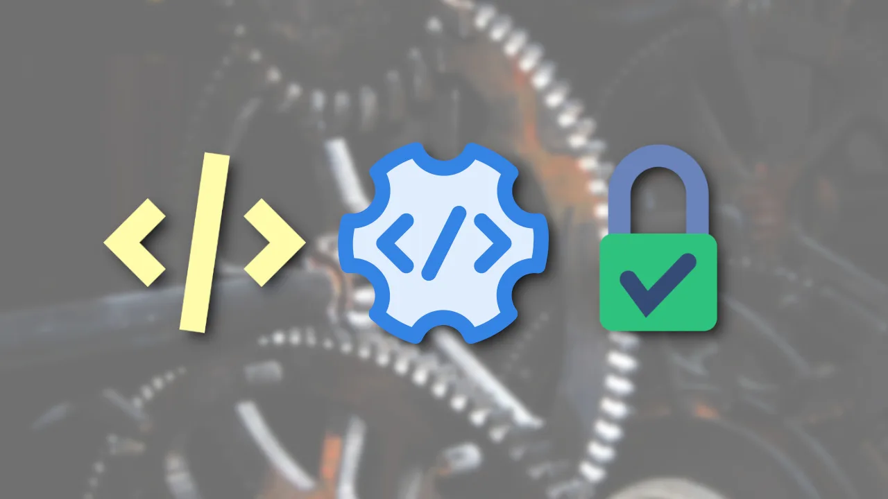
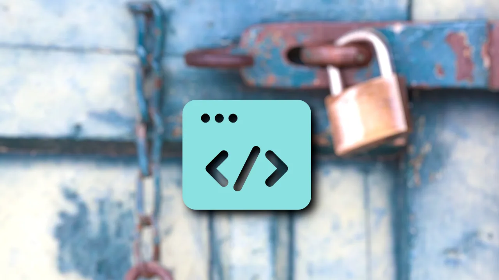

We believe security software like Kicksecure needs to remain Open Source and independent. Would you help sustain and grow the project? Learn more about our 14 year success story and maybe DONATE!
sandbox-app-launcherDocumentationSUID Disabler and Permission HardenerPrevious page: sandbox-app-launcherIndex page: DocumentationNext page: SUID Disabler and Permission HardenerEnhanced Security via Mount Options and Compiler Restrictions

Upcoming security enhancements include mounting key directories with secure options and restricting compiler and interpreter access by default.
Upcoming Security Enhancements
Mounting Directories Securely
We are preparing to enhance system security by mounting important
directories, such as /home/user, with the following options
by default:
noexecnodevnosuid
These options are designed to prevent the execution of binaries and scripts within these directories, reducing the risk of unauthorized or malicious code execution.
Restricting Compiler and Interpreter Access

Access to compilers and interpreters will also be restricted to minimize the risk of malicious code compilation and execution. These restrictions are part of our proactive approach to security.Impact on Users and Workflows
While these measures will provide greater security, they may affect advanced users who rely on script execution in their home directories. We understand the potential for disruption and of course will provide options to opt-out.
Opting Out
Instructions for users who prefer to opt out of these settings will be provided. Detailed documentation will be available on our wiki well before these changes are implemented. Should there be sufficient demand, we may also offer packages or scripts to simplify the opt-out process.
Integration with Security Initiatives
These security improvements are integral to our broader security strategy, including:
- Kicksecure Security Roadmap
- Strong Linux User Account Isolation
- SUID Disabler and Permission Hardener
- interpreter lock / compiler lock
- user-sysmaint-split - Role-Based Boot Modes (user versus sysmaint) for Enhanced Security
- Reduce Kernel Information Leaks (opt-in, goal is default enabled)
- hidepid (opt-in, goal is default enabled)
The goal is to fortify Linux user accounts against malware, making it difficult for a compromised account to affect others or to escape the virtual machine (VM) environment.
Commitment to User Freedom
Our commitment to No Intentional User Freedom Restrictions remains firm. Users retain the freedom to configure their systems as they see fit, in line with our core principles.
Additional Resources
For further details on these security measures and discussions around them, refer to:
Workarounds
flatpak
Could be configured to use a different directory https://docs.flatpak.org/en/latest/tips-and-tricks.html#adding-a-custom-installation
Attribution
Note: Kicksecure
is an Implementation of the Securing Debian Manual.
Specifically the feature you're reading about here is inspired by this
chapter in the manual: Mounting
partitions the right
way
Note: Kicksecure
is an Implementation of the Securing Debian Manual.
Specifically the feature you're reading about here is inspired by this
chapter in the manual: Setting
/tmp
noexec
Categories: Design